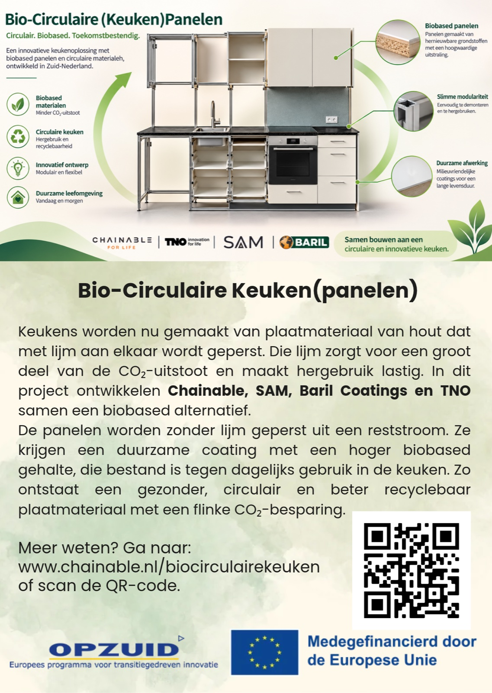
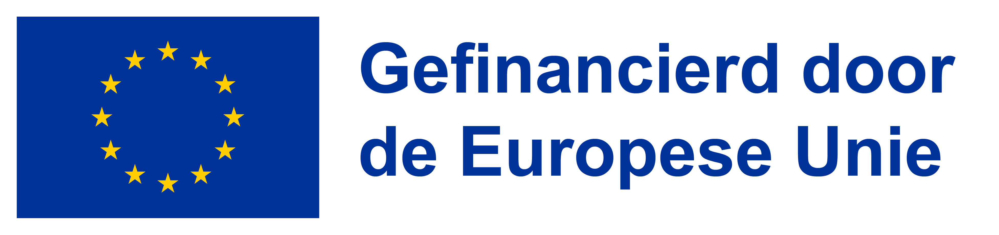

Innovatieproject · Looptijd drie jaar
Officieel van start: Bio-Circulaire (Keuken)Panelen
Samen met SAM Panels, TNO en Chainable werkt Baril Coatings de komende drie jaar aan een biobased alternatief voor traditioneel plaatmateriaal met lijm. We beginnen met de keuken: de meest veeleisende omgeving in huis.
Waarom?
Bijna elke keuken bestaat uit plaatmateriaal van hout dat met lijm wordt samengeperst en met kunststof wordt afgewerkt. Die lijm zorgt voor een groot deel van de CO₂-uitstoot en maakt echte circulariteit lastig. Dat kan anders.
In dit project worden de panelen zonder lijm geperst uit een reststroom van lokaal geteelde hennep. Ze krijgen een duurzame coating met een hoger biobased gehalte, die bestand is tegen dagelijks gebruik in de keuken. Daarvoor ontwikkelt Baril Coatings de coating, en TNO werkt aan biobased bouwstenen die fossiele grondstoffen in coatings vervangen.
Ons gezamenlijke doel is plaatmateriaal dat gezonder, circulair en beter recyclebaar is, met uiteindelijk een flinke CO₂-besparing. We beginnen met de keuken, omdat dat de meest veeleisende omgeving in huis is: stoom, vocht, krassen en stoten.
Als het in de keuken werkt, werkt het in het hele interieur.

Wie doet wat?
SAM Panels
Ontwikkelt lijmvrije platen van een reststroom van lokaal geteelde hennep, alleen geperst met water, warmte en druk.
TNO
Werkt aan biobased bouwstenen die fossiele grondstoffen in coatings vervangen.
Chainable
Brengt alles samen in een losmaakbare, circulaire keuken met een biobased, remontabel frame, en test die uitvoerig.
Meer weten?
Projectpartner Chainable houdt een projectpagina bij met de doelen en de voortgang. Ook bij SAM Panels lees je meer over de start van het project.

Medegefinancierd door de Europese Unie. Dit project wordt medegefinancierd door de Europese Unie via het EFRO-programma OPZuid 2021-2027. Met dank aan Stimulus Programmamanagement voor het vertrouwen.